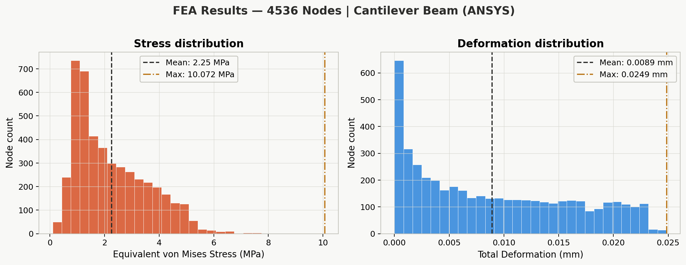
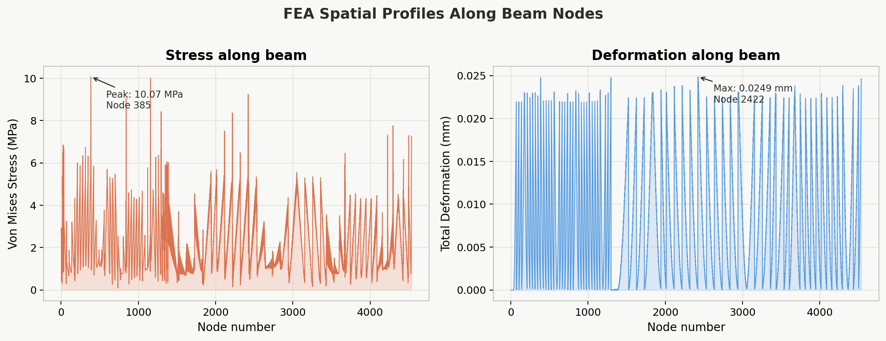
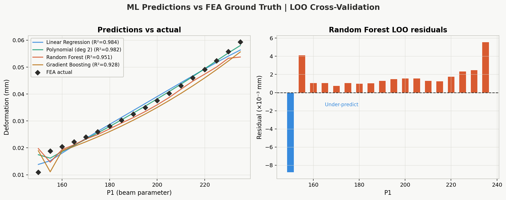
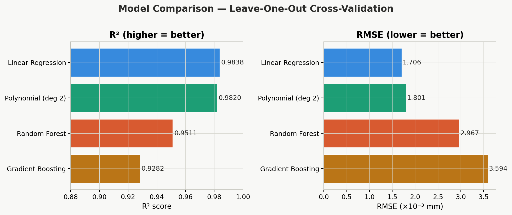
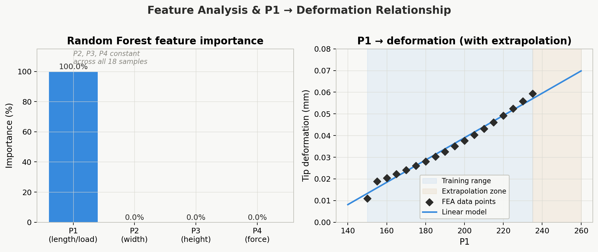
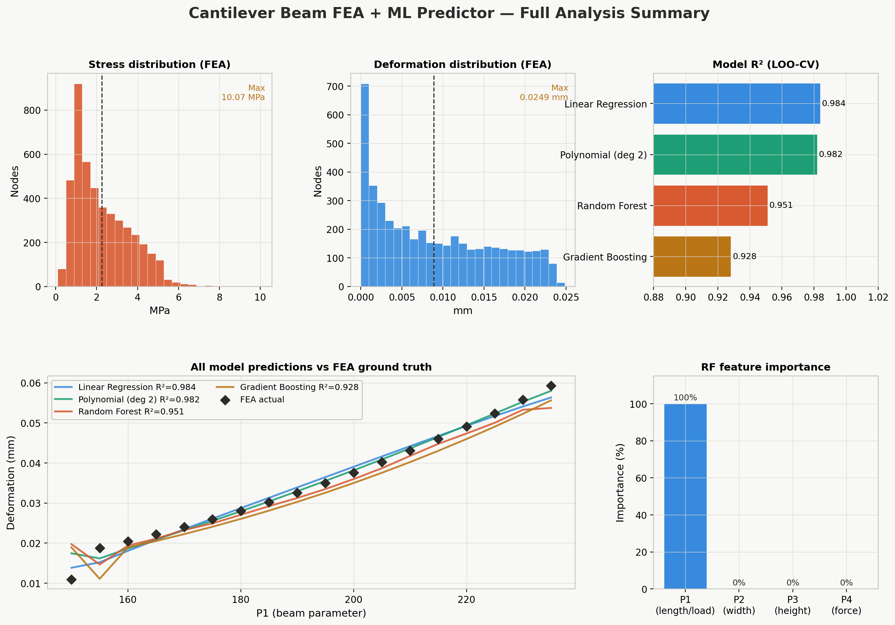

Structural FEA + Machine Learning
Cantilever Beam FEA + ML Predictor
ANSYS FEA simulation of a cantilever beam across 18 parametric configurations with 4536 nodes. Random Forest and Linear Regression models were trained to predict tip deformation from design parameters. Best model: Linear Regression R2=0.984, RMSE=0.00171 mm (LOO-CV). Key insight: when only 1 of 4 features varies, simpler models outperform ensembles.
4536FEA nodes
18Parameter sets
10.07 MPaMax von Mises stress
0.0249 mmMax tip deformation
0.9838Linear Reg R2, LOO-CV
0.9509Random Forest R2
0.00171 mmLinear Reg RMSE
P1Only varying parameter





